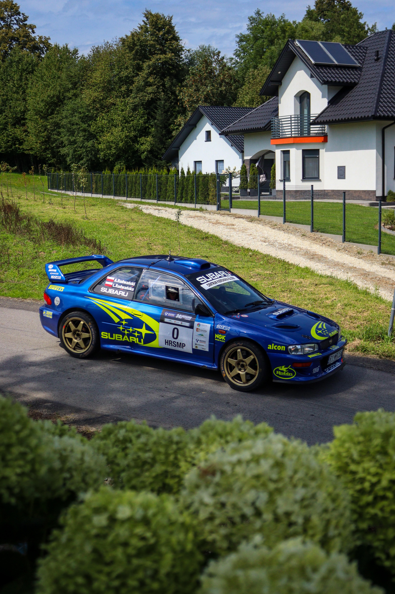
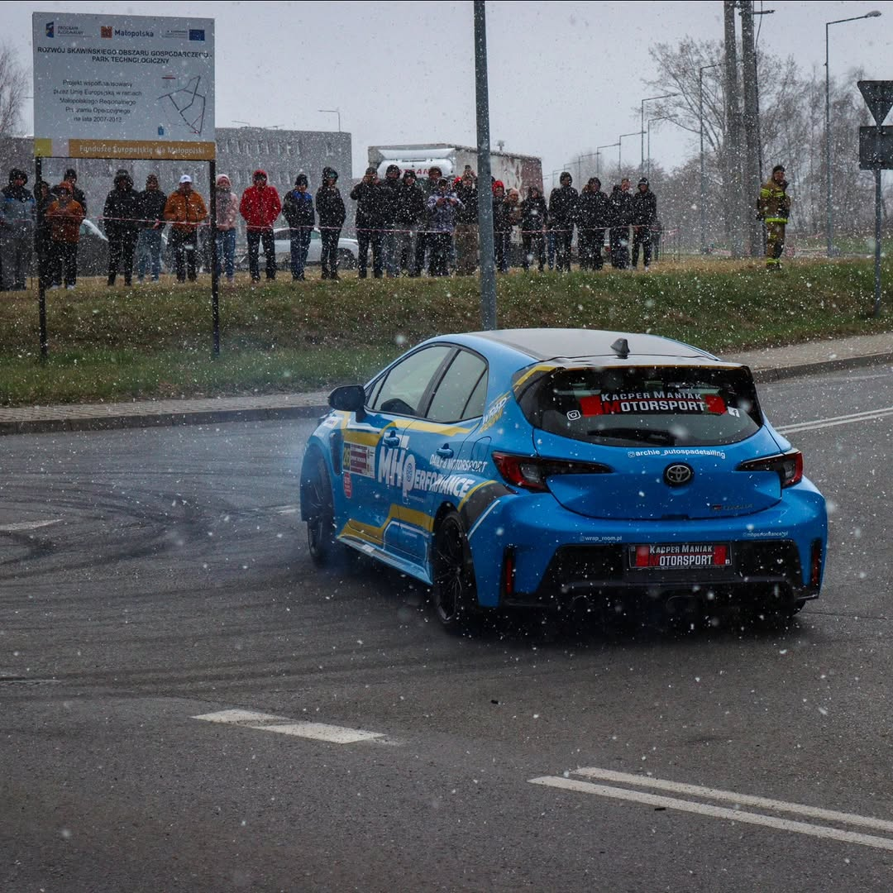
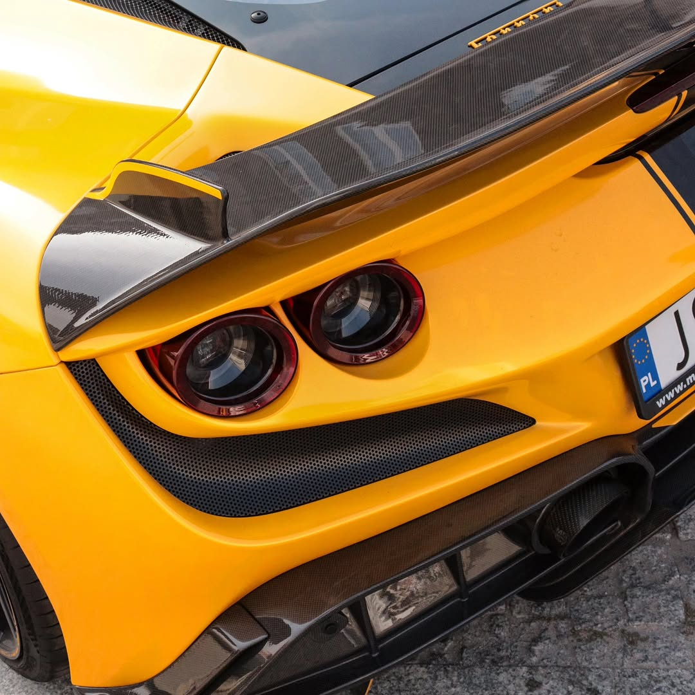
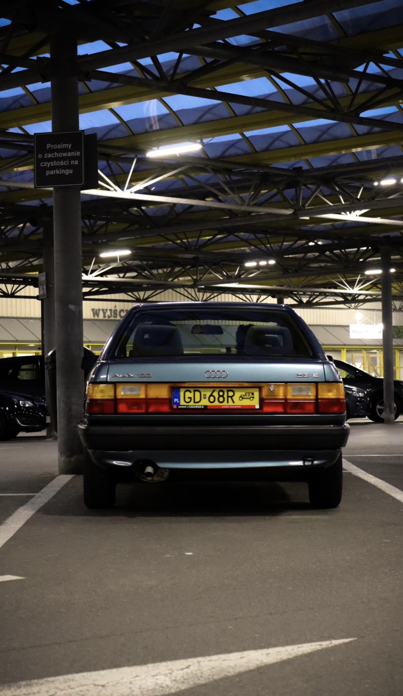
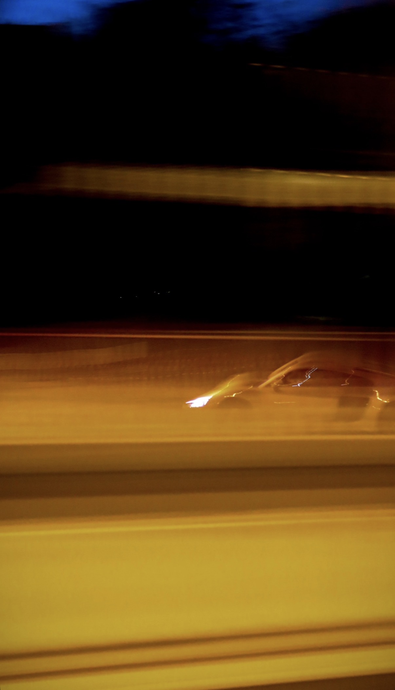
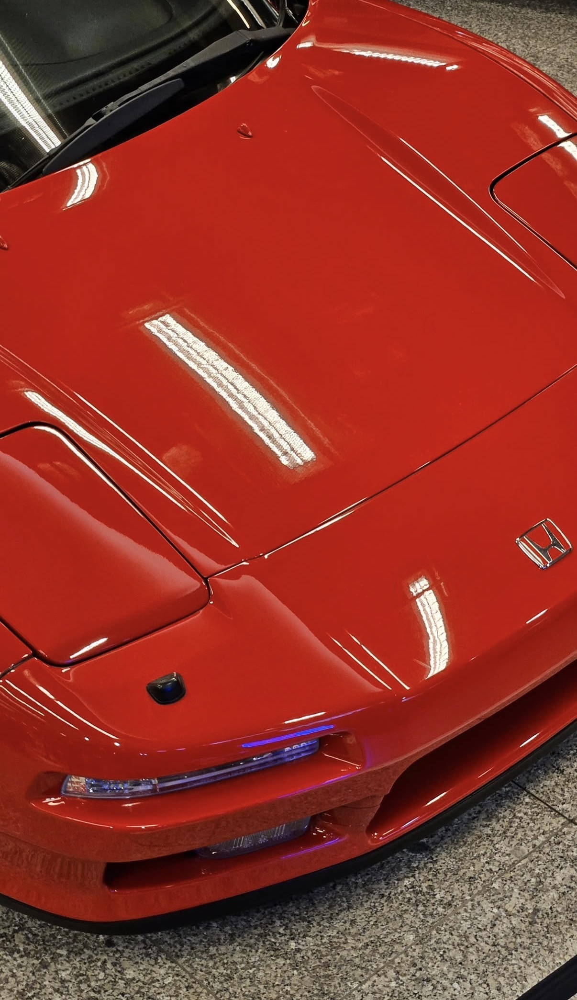
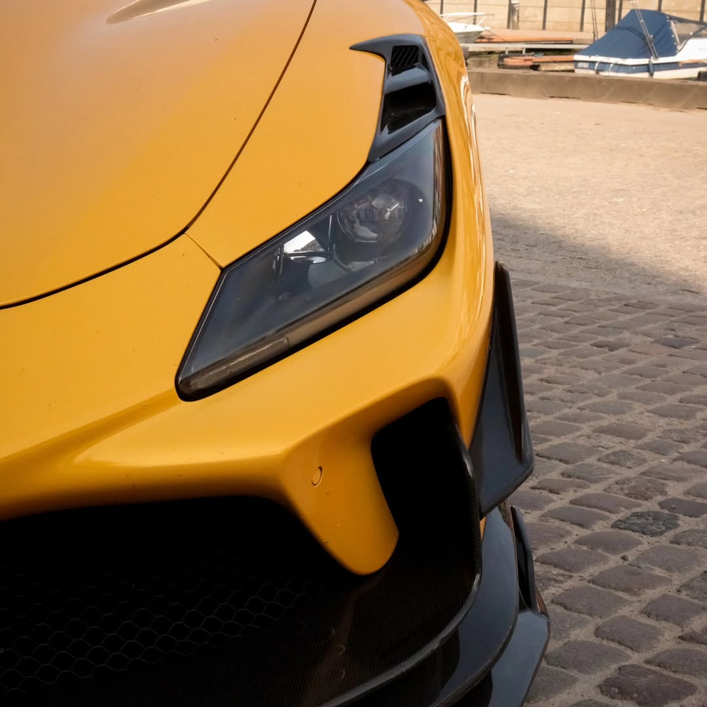
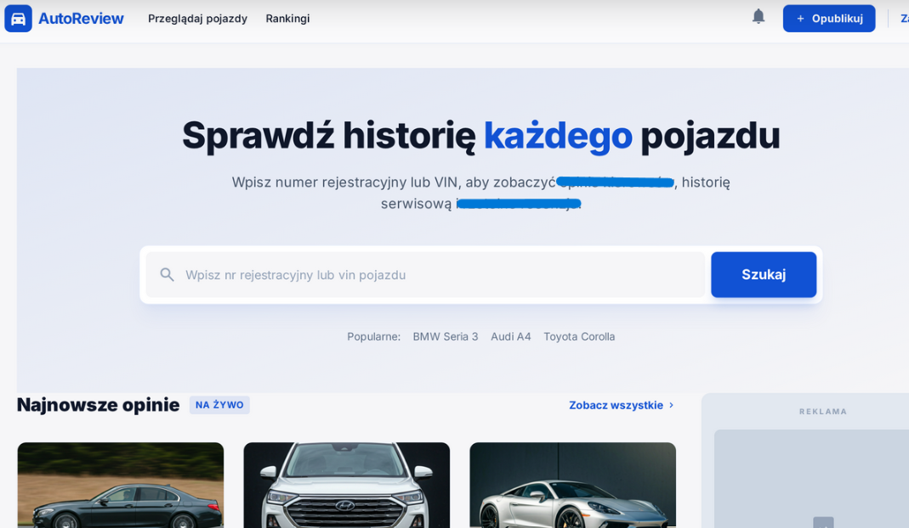
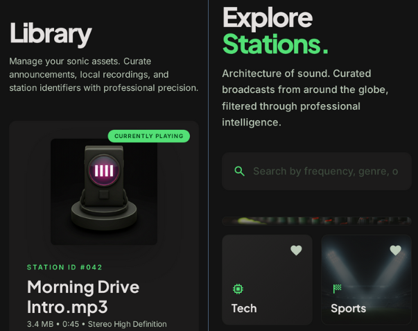
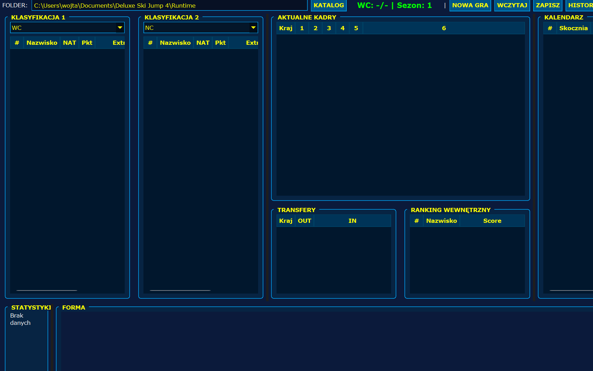

Student informatyki II stopnia oraz inżynier geoinformatyki. W mediach działam amatorsko,
ale z pełnym zaangażowaniem i rosnącym doświadczeniem.
Interesuję się sportem, motoryzacją i motorsportem, a także muzyką oraz grami komputerowymi.
Jestem otwarty na współpracę w obszarze technologii, danych, contentu, mediów, komentarza sportowego i projektów komunikacyjnych.
Zapraszam do obejrzenia mojego portfolio!
Najgłośniejsze przypadki dopingu w polskim sporcie zimowym
Analiza najbardziej kontrowersyjnych przypadków dopingu w historii polskich sportów zimowych,
ukazująca ich konsekwencje nie tylko dla samych zawodników, ale również dla instytucji,
opinii publicznej oraz wiarygodności całych dyscyplin.
Czy to koniec Areny Lodowej w Tomaszowie Mazowieckim? [REPORTAŻ]
Reportaż ukazujący złożoną sytuację infrastrukturalną i organizacyjną jednego z kluczowych
ośrodków łyżwiarstwa szybkiego w Polsce, osadzony w kontekście decyzji politycznych,
finansowania sportu oraz przyszłości dyscypliny.
Polacy czule o wsparciu kibiców. „Zostają tylko ci, którzy szczerze wierzą”
Tekst koncentrujący się na relacji między zawodnikami a kibicami,
analizujący emocjonalny wymiar sportu oraz rolę wsparcia w momentach kryzysu,
spadku formy i presji wyników.
Zbigniew Bródka w szoku. Nie spodziewał się takiego sukcesu
Materiał oparty na wypowiedziach mistrza olimpijskiego, ukazujący perspektywę zawodnika
wobec nieoczekiwanych wyników, presji sportowej oraz zmieniającej się roli doświadczenia
w rywalizacji na najwyższym poziomie.
Maciej Kot wrócił do czołówki. „Czerpię garściami, podpatruję”
Rozmowa dotycząca powrotu do wysokiej formy sportowej, procesu odbudowy
oraz znaczenia obserwacji i adaptacji w kontekście rywalizacji międzynarodowej.
Natalia Maliszewska, Artur Michalski i ich miłość do motoryzacji. „F1 to coś więcej niż sport”
Tekst ukazujący przecięcie świata sportów zimowych i motorsportu,
analizujący pasję zawodników do Formuły 1 oraz jej wpływ na ich podejście do rywalizacji i technologii.
F1 GP Las Vegas 2024 – wyniki, analiza i przebieg wyścigu
Szczegółowa analiza wyścigu w Las Vegas, uwzględniająca strategię zespołów,
kluczowe momenty rywalizacji oraz wpływ warunków torowych na końcowy rezultat.
Wybrane fotografie i kadry z mojego archiwum. Światło, rytm, przestrzeń i detal.







Voice & Commentary
KOMENTARZ SPORTOWY
Experience
Głos, tempo i narracja wydarzenia
Komentowałem ponad 50 wyścigów simracingowych,
prowadząc relację na żywo i analizując przebieg rywalizacji w dynamicznym środowisku motorsportu wirtualnego.
Jestem również spikerem na zawodach organizowanych przez Polski Związek Biathlonu,
gdzie odpowiadam za komunikację z publicznością, zapowiedzi oraz oprawę głosową wydarzeń.
Komentarz na żywo, relacjonowanie zawodów oraz realizacja materiałów audio.
50+
wyścigów simracingowych
Live
spiker / komentarz
Video
Fragment komentarza (live)
Audio sample
Próbka głosu
Zakres pracy
Komentarz live
Relacja na żywo, analiza i budowanie dynamiki wydarzenia.
Spiker zawodów
Zapowiedzi, komunikaty i prowadzenie wydarzeń sportowych.
Materiały audio
Próbki głosu i nagrania komentatorskie.
Development
PROJEKTY
01
Aplikacja do analizy obszarów zabudowanych na zdjęciach satelitarnych
Webowa aplikacja analityczna wspierająca wykrywanie zabudowy na ortofotomapach i zdjęciach lotniczych.
Projekt łączy backend w Pythonie, frontend w React + Leaflet oraz integrację z usługami geoprzestrzennymi,
takimi jak ULDK, WMS i WFS. Kluczowym elementem systemu jest moduł AI do identyfikacji budynków, porównywania wyników z danymi referencyjnymi i prezentowania ich
w formie interaktywnej analizy mapowej.

02
Aplikacja do śledzenia rynku motoryzacyjnego
Koncepcyjna platforma do monitorowania rynku motoryzacyjnego, zaprojektowana z myślą o analizie trendów,
cen, premier, ogłoszeń oraz aktywności marek i modeli. Aplikacja łączy warstwę informacyjną z panelem
analitycznym, umożliwiając szybkie porównywanie danych, obserwowanie zmian na rynku i śledzenie
najważniejszych zjawisk w branży automotive.

03
your.fm
Rozszerzenie-aplikacja do Spotify, zaprojektowane jako dodatkowa warstwa personalizacji i odkrywania muzyki.
Projekt rozwija klasyczne doświadczenie słuchania o funkcje inteligentnych rekomendacji, własnych statystyk
odsłuchu oraz bardziej zaawansowanego zarządzania biblioteką użytkownika.

04
Dodatek do DSJ4 z trybem kariery i zapisem sezonów
Autorski dodatek rozwijający klasyczne Deluxe Ski Jump 4 o pełnoprawny tryb kariery. Projekt wprowadza
strukturę sezonów, system progresji, zapis wyników oraz długoterminowy rozwój rozgrywki, nadając grze
bardziej rozbudowany, symulacyjno-menedżerski charakter.